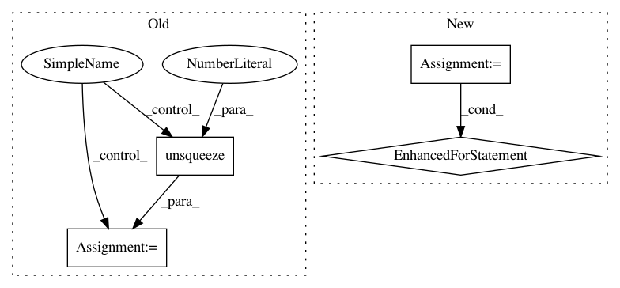

de977736f91d23c53e6a60c45822973a615daa15,fairseq/models/bart/hub_interface.py,BARTHubInterface,fill_mask,#BARTHubInterface#Any#Any#Any#,166
Before Change
).long()
if tokens.dim() == 1:
tokens = tokens.unsqueeze(0)
// ensure beam size is at least as big as topk
generate_kwargs["beam"] = max(
topk,
After Change
):
masked_token = "<mask>"
batch_tokens = []
for masked_input in masked_inputs:
assert masked_token in masked_input, \
"please add one {} token for the input".format(masked_token)
text_spans = masked_input.split(masked_token)
text_spans_bpe = (" {0} ".format(masked_token)).join(
[self.bpe.encode(text_span.rstrip()) for text_span in text_spans]
).strip()
tokens = self.task.source_dictionary.encode_line(
"<s> " + text_spans_bpe + " </s>",
append_eos=False,
add_if_not_exist=False,
).long()
batch_tokens.append(tokens)
// ensure beam size is at least as big as topk
generate_kwargs["beam"] = max(
topk,
generate_kwargs.get("beam", -1),
)
In pattern: SUPERPATTERN
Frequency: 3
Non-data size: 4
Instances
Project Name: pytorch/fairseq
Commit Name: de977736f91d23c53e6a60c45822973a615daa15
Time: 2020-11-02
Author: shajain@fb.com
File Name: fairseq/models/bart/hub_interface.py
Class Name: BARTHubInterface
Method Name: fill_mask
Project Name: facebookresearch/Horizon
Commit Name: 96f486bd47be8baad365a32fd34d22881fdafa95
Time: 2020-07-30
Author: czxttkl@fb.com
File Name: reagent/training/ranking/seq2slate_sim_trainer.py
Class Name: Seq2SlateSimulationTrainer
Method Name: _simulated_training_input
Project Name: interactiveaudiolab/nussl
Commit Name: e7b29c20004bc520b202fea982b8db4c760fc822
Time: 2020-08-06
Author: prem@u.northwestern.edu
File Name: tests/ml/test_loss.py
Class Name:
Method Name: test_permutation_invariant_loss_tf